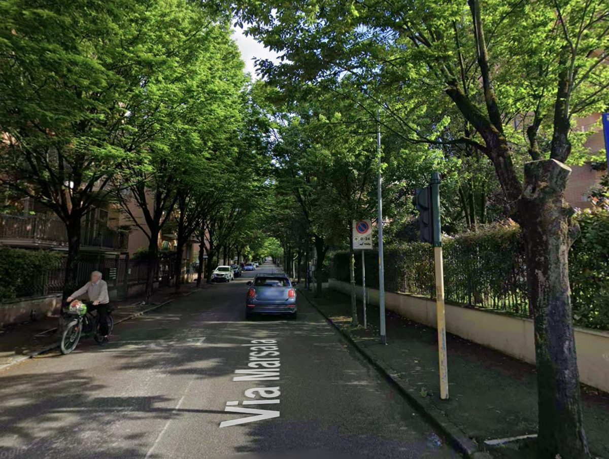

I prezzi di Agosto e le aperture di Settembre
Ad Agosto il prezzo medio è stato di 0,180 €/kWh per l'energia elettrica e 0,687 €/Smc per il gas. Le aperture di Settembre sono, come si dice, mostruose: il gas è partito da 0,823 €/Smc per arrivare, oggi 10 Settembre, a 0,906 €/Smc; la luce da 0,212 €/kWh a 0,228 €/kWh nello stesso arco di tempo.
Numeri che confermano quello che dicevamo già ad Agosto: l'autunno resta teso.
Perché fa ancora così caldo, e cosa c'entra con la bolletta
C'è un paradosso dietro l'aria condizionata che ci sta salvando quest'estate: il motore che raffresca casa scarica aria calda fuori, e nelle fasce serali questo alza la temperatura delle strade di 1-1,5 gradi rispetto al resto della città, proprio nelle zone con più condizionatori per famiglia. Un fenomeno che si autoalimenta — più caldo fuori, più bisogno di raffrescare dentro, più aria calda scaricata fuori.
La colpa non è solo di chi accende il condizionatore. Le amministrazioni che incentivano la cementificazione invece di piantare alberi ci mettono del loro e, per "area verde" non intendo un prato, ma alberi veri, quelli che fanno ombra e abbassano la temperatura percepita. Via Marsala a Verona, foto sotto, è un buon esempio di quanto la differenza si veda.

Come prepararsi all'inverno: le regole per ridurre i consumi
Prima regola, per tutti: l'efficienza non è abbassare il termostato, è evitare di riscaldare spazi, orari e volumi che non servono.
In casa: temperatura stabile intorno a 19-20°C, arieggiare 5-10 minuti a finestre spalancate invece di tenerle socchiuse a lungo, non coprire mai radiatori o split con mobili e tende.
Per chi ha un'attività: separa area vendita/ufficio da magazzino/retro con orari e temperature diversi, e controlla il consumo notturno, se è alto anche a saracinesca abbassata, c'è uno spreco da trovare.
Chi ha un capannone: il dato utile non è il consumo annuo totale, è il consumo per ora di produzione o per linea, solo così si capisce se il costo sale perché sale la produzione o perché l'impianto lavora male.
Cosa dicono il mercato e chi ci lavora dentro
Ecco alcuni spunti che ho raccolto in giro, buoni per ragionarci sopra insieme.
Sul fronte degli stoccaggi di gas siamo oggi all'84% contro l'obiettivo del 90% per l'inizio dell'anno termico ma il problema vero non è questa fase, è l'approvvigionamento dei prossimi mesi: il riempimento degli stoccaggi copre il 27% della domanda invernale italiana, e più di così non si può stoccare. È proprio questo dubbio sul dopo che il mercato sta scontando in anticipo, ed è una delle cause reali delle tensioni sui prezzi che vediamo.
C'è poi chi fa notare un problema più tecnico sul calcolo del PUN: il prezzo del giorno prima si basa su una stima dei profili di carico, mentre il consumo reale è un risultato matematico (generazione più import meno export meno pompaggi). La discrepanza tra domanda stimata e offerta reale genera una distorsione di mercato di cui si parla poco.
Sul nucleare, argomento sempre scomodo in Italia: resta una delle poche fonti programmabili disponibili per appiattire i costi nei momenti in cui le rinnovabili non reggono e, con queste ondate di caldo, capita spesso: l'idroelettrico produce meno per la siccità, l'eolico si ferma per mancanza di vento, il fotovoltaico si sgancia per surriscaldamento o overproduzione.
L'AD di Enel, Cattaneo, ha messo sul tavolo tre punti che condivido: la domanda di energia è destinata a crescere e con lei il tema della sicurezza delle infrastrutture; la maggior parte delle famiglie italiane è oggi protetta da contratti a prezzo fisso, e questo dà stabilità contro la volatilità del mercato, un punto su cui la penso come lui; il piano industriale Enel punta forte su potenziamento e modernizzazione delle reti per gestire flussi crescenti.
Infine, una nota critica sui BESS (le batterie di accumulo) che mi ha fatto riflettere: l'idea che servano solo a salvare l'overgeneration da rinnovabili non regge del tutto. Molti si caricano di notte dalla rete generica, non dal parco rinnovabili a cui sono collegati, aumentando la domanda coperta da gas o import, e scaricano in serata sfruttando gli spread di prezzo fissati proprio dal gas. Il mio punto di vista: il problema è nella fase di scarico, che aumenta i costi per chi non ha un proprio sistema di accumulo sicuramente nel breve periodo ma, nel lungo, non ho abbastanza dati per dirlo con certezza.
Novità normative: cosa cambia per te
Due cose in arrivo lato normativo.
La prima riguarda i cambi di piano nel portafoglio clienti: la normativa richiederà l'assenso esplicito del cliente quindi noi ti invieremo l'analisi, tu dovrai rispondere che vuoi procedere. È una cosa che dipende dai fornitori, non da noi venditori, ma la trattiamo già come buona prassi.
La seconda: ARERA ha aperto una consultazione su ulteriori obblighi informativi legati a contratti a prezzo variabile, sconti e prodotti/servizi aggiuntivi. Ti aggiorno appena la consultazione si chiude.
Un'ultima riflessione prima di decidere
C'è un post che ho visto girare, un disegno con due dinosauri: uno chiede "è molto profondo?", l'altro risponde "no, arriva al collo" con sotto, la scritta "ciò che è vero per l'altro può non esserlo per te". Mi ci sono ritrovato.
La mia lettura del mercato energetico, quella che ti do ogni mese, nasce dalla mia esperienza e da come interpreto i dati ma chi si trova in una situazione di emergenza da gestire subito, può ragionare diversamente da chi può permettersi di lasciar correre un mercato alto e aspettare. Nessuna delle due letture è sbagliata: dipende da dove sei tu, non da dove sono io.
Per questo, se hai dubbi su cosa fare nella tua situazione specifica, la cosa più utile resta parlarne insieme.